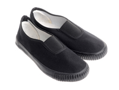

Sneaker (hay còn được biết đến như là giày điền kinh, giày tennis, giày tập gym, giày thể thao, giày chạy hoặc giày tập) là những đôi giày được thiết kế chủ yếu để phục vụ cho thể thao hoặc các hoạt động khác liên quan đến thể dục, tuy nhiên ngày nay, loại giày này cũng có thể được hiểu là giày dùng để đi thường ngày. Cái tên sneaker được dùng để miêu tả một loại giày với đế linh hoạt được làm từ cao su hoặc các chất liệu tổng hợp, còn phần trên của giày được làm từ da hoặc vải tổng hợp.
I. Lịch sử về giày
-Ban đầu những đôi giày này được gọi với cái tên 'plimsoll' vào thập niên 1870, xuất hiện trong cuốn sách The Plimsoll Sensation của Nicholette Jones.
-Plimsolls được sử dụng phổ biến bởi những người đi chơi xa và sau đó cũng bắt đầu được sử dụng bởi các vận động viên môn tennis và croquet vì sự thoải mái của chúng. Phần đế đặc biệt cùng hoạt tiết được khắc chìm bên dưới để gia tăng ma sát bề mặt của những đôi giày được phát triển, và dần dần chúng cũng được dùng rộng rãi cho quân đội Anh. Loại giày cũng dần dần được sử dụng nhiều hơn cho những công việc đi lại hàng ngày và trong các hoạt động ngoài trời vào thế kỷ 20, plimsolls thậm chí được phát hiện cùng với xác của đoàn leo núi thám hiểm Terra Nova xấu số. Plimsolls thậm chí cũng là một loại giày bắt buộc trong các tiết học thể dục của nước Anh.
. Công ty giày J.W. Foster and Sons của anh bắt đầu sản xuất mẫu giày chạy bộ đầu tiên vào năm 1895; đôi giày có lớp gai ở đế để giúp thuận lợi hơn cho việc gia tăng sức bền và tốc độ. Công ty sau đó bán ra những mẫu giày handmade chất lượng cao tới các vận động viên điền kinh trên khắp thế giới, và cuối cùng nhận được một hợp đồng sản xuất giày của đội tuyển Anh tham dự thế vận hội mùa hè Olympic 1924. Harold Abrahams và Eric Liddell đã chiến thắng trong phần thi chạy 100m và 400m, sử dụng những đôi giày của nhà Foster.
. Còn tại Mỹ, thiết kế của giày dép dần trở nên đáng chú ý hơn ở cuối của thế kỷ 20, lúc này chúng được gọi là "sneakers". Vào năm 1892, Công ty U.S. Rubber giới thiệu mẫu giày đế cao su đầu tiên trong nước, trở nên nổi như cồn và liên tục cháy hàng. Đôi giày bóng rổ đầu tiên được thiết kế bởi Spalding vào đầu năm 1907. Thị trường giày sneaker tiếp tục phát triển sau Thế chiến thứ nhất, khi thể thao và điền kinh dần trở thành một cách để tôn vinh tinh thần và lòng yêu nước. Thị trường sneaker tại Mỹ gia tăng nhanh chóng khi các cậu thiếu niên bắt đầu mua sneaker vì thần tượng của chúng, cầu thủ bóng đá Jim Thorpe, bên cạnh đó là mẫu giày Converse All Stars được quảng cáo bởi vân động viên bóng rổ Chuck Taylor.